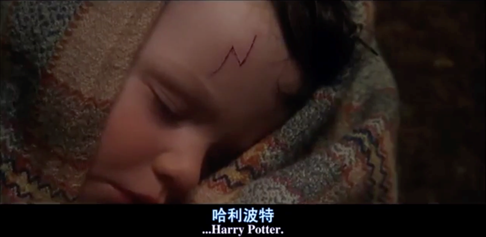
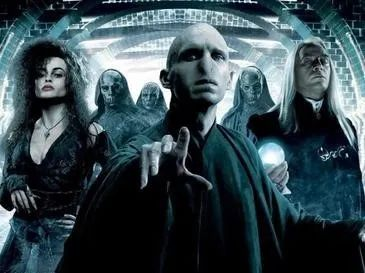
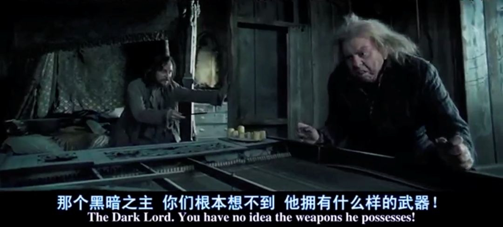
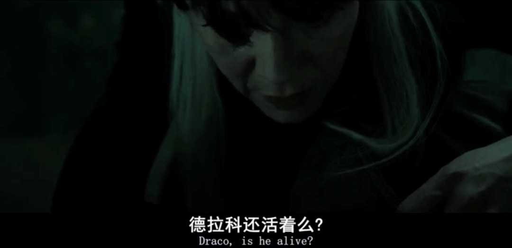

收录于合集
以下文章来源于国际关系讲坛 ，作者国际关系讲坛
 国际关系讲坛 .
国际关系讲坛 .
国际关系也可以如此接地气
趣味国关 · 国关人眼中的哈利波特 ****
本文约 5000字 ，预计阅读时长 5分钟
“每一个留有童真的人，都还在等待猫头鹰送来的录取通知书。”
今年夏天，经历了疫情的洗礼，我们重新迎来了全国影院重启，也迎来了《哈利·波特与魔法石》的重映。无数哈利·波特迷走进电影院，高喊着“青春回来了”，并补上了那张欠了近二十年的电影票。再次走进电影院的我们，褪去了年少的稚嫩，也都像2002级霍格沃茨魔法学校的新生们一样，成长为社会这个大“魔法世界”中担任中流砥柱的“高级魔法师”。
那么，国政人眼中的哈利·波特又是怎样的剧情呢？下面就跟着国小政一起，用另一个视角来解读陪伴我们长大的哈利·波特系列吧！
今天我们推出将《哈利·波特与国际政治》系列的第一期《哈利·波特中的战争与同盟》~
**
**
本期编委
【作者】
李 思
（国政学人编译员，韩国首尔大学国际区域学）
【策划】
姚寰宇
（国政学人编译员，山东大学东北亚学院）
【美工】
黄竹音
【排版】
李文博
图源：微博@华纳兄弟电影
读哈利波特的故事，可以让我们暂时远离现实世界，沉浸在J.K.罗琳为我们构筑的魔法世界里，与哈利一起在惊险刺激中成长。如果你也是一个哈迷，那你应该记得伏地魔领导的食死徒们和凤凰社之间的对抗，也一定了解两次魔法大战的的来龙去脉，更对巫师们之间的恩恩怨怨印象深刻。在魔法世界中，不只有人类，更有许多其他神奇生物。魔法世界同麻瓜世界一样，也存在着种族、权威、秩序和战争等现实世界政治元素。巫师们同人类一样，有对权力的渴望，面对战争的恐惧和生存的挣扎。 本文会帮助哈迷们从国际政治学同盟理论的视角来理解魔法世界中的战争与同盟。 读完本文，你将会对哈利波特的情节有全新的理解。
我们都知道，哈利波特的故事由两次魔法大战为主线展开叙述。由于伏地魔（汤姆·里德尔）本人强烈的纯血巫师统治世界的理念和其对权力的渴望，发动了第一次魔法大战（First Wizarding War）。在第一次魔法大战期间，邓布利多秘密组织凤凰社对抗伏地魔和他的食死徒。然而，特里劳妮抛出的预言被斯内普偷听到，此时身份还是食死徒的斯内普向伏地魔告密。因此发生了戈德里克山谷事件，哈利父母被害。由于莉莉死前给哈利施加的爱的保护咒，伏地魔试图杀死哈利失败，伏地魔重伤，暂时销声匿迹。自此，第一次魔法大战结束，哈利带着伏地魔给的闪电伤疤，开始了惊险刺激的一生。

图源：《哈利波特与魔法石》电影截图
在两次魔法大战中，我们可以看到伏地魔与邓布利多两个阵营的对抗、食死徒对伏地魔的忠诚、哈利等人对邓布利多的追随和分别加入两个阵营的其他生物。那么魔法世界中的不同阵营如果用麻瓜世界的同盟的概念该如何解释呢？不同学派的学者对于同盟的定义略有差异，新现实主义学派的斯蒂芬·沃尔特对同盟的定义较为全面。在他看来,“同盟是两个或多个主权国家之间在安全合作方面所作出的正式或非正式的安排。” [1] 现实世界的战争多数发生在主权国家之间，然而在哈利波特故事的魔法世界中，权力并不是由国家或政府掌控，个人的力量则相对更加突出。在魔法世界中，魔法部虽有类似政府职能，但在战争中的实力与邓布利多、伏地魔等个人或凤凰社这样的巫师团体比起来微不足道。因此，在我们讨论哈利波特故事中的同盟关系时， 麻瓜世界的主权国家将被类比为魔法世界中强大的巫师或巫师团体来解释同盟的概念。
**
**
《哈利波特与凤凰社》，邓·伏大战，
图源：https://www.youtube.com/watch?v=BT2Y4_XuU&list=PLg45KLfneaCTXxacXI9WEZ_26lid_D6YU&index=19
现在，我们将仔细剖析一下两次魔法大战中伏地魔与邓布利多两大阵营中的巫师们和其他生物为什么会与之结盟以及用麻瓜世界的国际政治理论该如何理解这些同盟背后的意义。
**
**
首先，在第一次魔法大战期间，伏地魔集结了一群追随他的食死徒。汤姆·里德尓在学校时期的形象就是学习优异，性格冷酷。他聚集了一帮朋友，这帮朋友就是食死徒的前身。更确切来说，汤姆视他们为自己的追随者、仆人，而不是朋友。有的是弱者，为了寻求“大哥保护”，有的为了抱他大腿，追求黑魔法。汤姆想要完成斯莱特林的理想，推翻麻瓜世界，让纯血巫师占领统治世界。他的追随者也有这样的理想。（《哈利波特与混血王子》第17章）在现实世界的战争中，由于惧怕一方强大的实力而选择与之结盟的情况在国际政治上定义为“看风使舵” (Bandwagoning)。肯尼思·沃尓兹把“看风使舵”当作与制衡相对立的一种结盟模式:看风使舵是指加入到较强大的一方,而制衡则是指与较弱的一方结盟。 [2] 历史上，当大国竞争时，中小国家们就面临着在“制衡”还是“看风使舵”之间的阵营抉择。在魔法世界中，虽然也有像贝拉和克劳奇那样对伏地魔忠心耿耿的食死徒，但也不乏像虫尾巴彼得和马尔福一家那样出于对伏地魔的恐惧和对生存的渴望而选择追随更强的伏地魔阵营的盟友们。

图源：维基百科，食死徒
在《哈利波特与阿兹卡班的囚徒》中，小天狼星为了保护哈利而越狱，在尖叫棚屋揭开哈利父母之死的秘密的时候，彼得对小天狼星说到：“你们不懂，大魔王太强大了。” “出卖詹姆和莉莉时，我是被逼的，我想活命。换做是你，你会怎么做？

图源：《哈利波特与阿兹卡班的囚徒》电影截图
要知道，彼得原本是詹姆与小天狼星（还有卢平）的好兄弟，本来，四个好朋友一起练就阿尼玛格斯，一起偷溜出来在霍格沃茨闲逛，一起制作活点地图，一起恶作剧。在胜似亲人的“四兄弟”团体中，彼得作为其中的一员一直相处融洽。但当面对伏地魔的黑魔法势力时，彼得背叛了朋友，选择了更强大的伏地魔阵营，因此才发生了后来的戈德里克山谷事件，哈利父母被杀。彼得在尖叫棚屋败露之后，只能继续依附于伏地魔，帮助伏地魔延续重返魔法界的计谋。
《哈利波特与火焰杯》第33章
“You returned to me, not out of loyalty, but out of fear of your old friends. May your loyalty never waver again, Wormtail ”
_
_
“ 你回到我身边，并不是因为忠诚，而是害怕你的老朋友。 望你能忠心不变，虫尾巴。 ”
在魔法世界，另一个惯会“看风使舵”的就是马尔福一家。 第一次魔法大战结束，伏地魔重伤之后，卢修斯·马尔福是第一批投降的食死徒。他谎称自己被下了咒语，被控制才跟随了伏地魔。卢修斯虽然是纯血理念的追随者，但不是伏地魔本人的追随者，卢修斯自始自终是出于恐惧才跟随的伏地魔。在哈利成功抵挡了伏地魔的死亡咒语之后，魔法界流传着哈利波特本人就是一名黑魔王的说法，而卢修斯本人对这一说法坚信不疑。因此，当看到伏地魔大势已去之后，卢修斯马上选择投降，保全一家人的性命。然而，在后来伏地魔正式回归之后，卢修斯又立刻向伏地魔表忠心，为了支持伏地魔对霍格沃茨的进攻，提供给伏地魔马尔福庄园，甚至牺牲自己的魔杖，虽然这并非卢修斯本人的意愿。卢修斯和伏地魔之间的关系就是典型的“见风使舵”联盟模式。
《哈利波特与魔法石》第六章
Said Ron darkly. “They were some of the first to come back to our side after You-Know-Who disappeared.Said they’d been bewitched.”
_
_
罗恩说到，“在伏地魔消失后，马尔福是第一批投降的，还说 他们是被下了咒语”
然而，故事的最后马尔福一家没有完全站在伏地魔阵营。这里马尔福一家的态度转变可以用格伦·斯奈德（Glenn Snyder）的“同盟困境”理论来理解。斯奈德指出，同盟从来都不是稳固的。害怕“被抛弃”(abandonment)或者担心“被牵连”(entrapment)这样的困境一直存在在同盟关系中。被抛弃意味着失去盟国的支持，被牵连意味着卷入一场关于盟国利益的冲突中，而这个利益另一方不能共享，或者只能部分共享。当一国认为维护同盟的价值比为盟国的利益而战斗的成本更高时，就会发生牵连。施奈德指出,任何结盟的国家都不可避免地要在被“抛弃”和“牵连”之间进行权衡。一个担心遭受“牵连”而打算与盟国拉开距离的国家又要冒着被盟国抛弃的风险。那么国家在这两者之间该如何权衡？[3]
德拉科·马尔福在刺杀邓布利多任务面前犹豫挣扎
图源： ‘9 Facts That Prove Draco Malfoy Is a Great Guy’ , Bright Side
与现实世界同理，在魔法世界，邓布利多与伏地魔的“两极体系”中，巫师们在选择阵营时，在“被抛弃”和“被牵连”间挣扎纠结是常见的情况。在《哈利波特与混血王子》中，德拉科·马尔福被给予了刺杀邓布利多的任务，此时的德拉科是绝望挣扎的，因为他知道，如果他不按照伏地魔的话去做，伏地魔会杀死他们全家，但若是照做，与整个霍格沃茨为敌又于马尔福一家无益。此时的马尔福一家就陷入了“被抛弃”和“被牵连”的挣扎中。这种挣扎贯穿了整个第二次魔法大战的过程。在《哈利波特与死亡圣器》中，当哈利、赫敏和罗恩三人被麻瓜搜捕队抓到的时候，赫敏为了保护哈利不被认出，在哈利脸上用了蜇人咒使哈利变得面部肿胀，难以辨认。当德拉科被拉到哈利面前进行辨认的时候，他知道，只要他认出哈利，哈利必死无疑。但此时的德拉科内心挣扎，最后只得含糊其辞。[4]
德拉科·马尔福认出哈利，但犹豫是否要说出真相。
图源： ‘9 Facts That Prove Draco Malfoy Is a Great Guy’ , Bright Side
<J.K. Rowling Originals>
Draco Malfoy篇
Although Draco had still not rid himself of the hope of returning the family to their former high position, his inconveniently awakened conscience led him to try-half-heartedly, perhaps, but arguably as best he could in the circumstances-to save Harry from Voldemort when the former was captured and dragged to Malfoy Manor.
_
_
在哈利被抓到马尔福庄园的时候，虽然德拉科仍没有放弃重振家族威风，回到曾经地位的想法，但他的良知却觉醒，别扭地促使他尝试，或许也带有一丝真心，但也只是勉强尽其所能地将哈利救出来。
战斗的最后，当哈利前去“赴死”， 伏地魔索命咒之后哈利倒地后，纳西莎·马尔福（德拉科·马尔福的妈妈）感受到哈利没有死，轻声问哈利：“德拉科还活着吗，他还在城堡里吗？”，哈利轻声回答道：“是的。”纳西莎立刻回头骗伏地魔：“哈利波特死了。”这里再次证明了，马尔福一家根本就不是真心追随伏地魔，即便被迫追随，也并不是什么忠诚的盟友，他们想要的只是生存。

图源：《哈利波特与死亡圣器》电影截图
斯蒂芬·沃尔特的“威胁均衡论”指出，在同盟研究中,权力是一个重要因素,但不是唯一因素。国家之所以结盟,更确切地说是对“威胁”所作出的一种反应。他认为，国家之所以结盟主要是为了制衡威胁，而不仅仅是制衡权力。国家结盟的目的是制衡对自己构成最大威胁的国家，而不一定是实力最强大的国家。例如，东亚地区的韩美同盟的重要原因之一就是为了制衡美国和韩国面临的共同威胁—朝鲜。由于朝鲜的核武器对美国和韩国的国家安全都构成威胁，因此即使朝鲜并非实力强大的国家，但为了共同制衡朝鲜，美国和韩国依旧维持着牢固的同盟关系。在魔法世界中，随着伏地魔公开出现，食死徒越狱，摄魂怪加入伏地魔阵营，第二次魔法大战一触即发。随着伏地魔的帮手越来越多，面对邪恶势力卷土重来，邓布利多也立刻重启凤凰社，安排海格、小天狼星等人集合人手并寻找盟友。有时共同的威胁也可能促成看起来不太可能的联盟。虽然海格和马克西姆发夫人拉拢巨人失败，大部分的巨人选择加入伏地魔阵营，但在最后的围攻时刻，很多人都加入了帮助霍格沃茨的联盟中，包括珀西·韦斯莱、精灵克利切、马人以及斯莱特林院的一些学生。[5] 这些看似不太可能加入对抗伏地魔阵营的人在第二次魔法大战选择帮助霍格沃茨，正是因为他们都意识到他们面对着共同的威胁—黑魔王伏地魔。因此，当面对共同的外来威胁时，这些人选择加入邓布利多阵营共同制衡伏地魔。
《哈利波特与凤凰社》第20章
‘I reckon about seventy or eighty,’ said Hagrid.
_‘yep,‘said Hagrid sadly,’eighty left.’
_
‘Is that all?’ Said Hermione.
_
_
“我估摸有70-80个巨人吧。”海格道,
“这是所有的吗？“赫敏问，
“是的”海格回答道，“剩80个了。”
虽然，历经多年的等待，终究没能等来属于我们的那只猫头鹰和印有霍格沃茨火漆印的入学通知书，但是哈利波特的魔法世界的奇幻与美妙已经深深烙印在我们心里。虽然这个世界与我们所处的现实世界一样并不完美，无论是巫师还是麻瓜，同样要面对充满着由种族、权力、经济和军事等引起的矛盾与战争的世界。
但我们相信，与魔法世界的结局一样，现实世界的伤痛也会像哈利头上的闪电伤疤一样，终有一天，所有的痛苦都会消逝。就像罗琳在结尾写下的那句：All was well。
《哈利波特与死亡圣器》
最后一丝蒸汽消散在秋日的空气中。火车转弯了。
哈利挥别的手仍举在空中。
“他会没事的。“金妮小声说。
哈利看着她，放下手，无意间碰到了额头上的闪电伤疤。
“我知道他会的。”
伤疤已经十九年没有疼过了。
_
_
Harry Potter Ending
图源：https://tenor.com/view/harry-potter-ending-all-was-well-end-gif-8633534
参考文献
[1]Stephen Walt, The Origins of Alliances, p. 12.
[2]肯尼思·沃尔兹:《国际政治理论》中译本, 第152 —153 页。
[3]于铁军，“国际政治中的同盟理论:进展与争论“，《欧洲研究》， 1999年第5期14-25
[4]J.K. Rolling, < J.K. Rowling Originals> Draco Malfoy, Wizarding World, https://www.wizardingworld.com/writing-by-jk-rowling/draco-malfoy
[5]（美）贝瑟妮·巴拉特著，朱晔，姜睿译，《哈利·波特中的政治学》，中国财政经济出版社，2015。
哈利波特故事情节梳理参考：
Youtube频道：青蛙刀圣1993，《细品哈利》系列解说。
网址：https://www.youtube.com/watch?v=8ptFtkwtXE0&list=PLg45KLfneaCTXxacXI9WEZ_26lid_D6YU
文中未标明出处图片来源于网络，侵删。